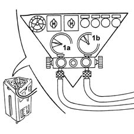
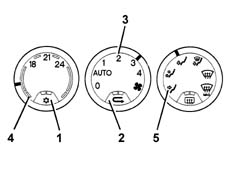

5040B Check on operation of air conditioning system (pressures)
- Path
- Test > 50 AUXILIARY UNITS > 5040 AIR CONDITIONING CASING AND COMPONENTS > 5040B Check on operation of air conditioning system (pressures)
- Kind
- test / check procedure
- Applies to
- engines: 1.6 TS , 1.8 TS, 2.5 V6, 1.9 JTD 8v , 2.4 JTD 10v; all production periods
- Interactive page
- https://sloeber94.github.io/elrnDB-a156/en/#/3239173
Applies to: engines: 1.6 TS , 1.8 TS, 2.5 V6, 1.9 JTD 8v , 2.4 JTD 10v; all production periods
Close all the doors and windows.
Position the gear lever in neutral.
Start up the engine and let it reach 1250 - 1300 rpm.
Connect the vehicle system to the special recharging equipment (see Op. 5040A10 Air conditioning refrigerant CIRCUIT - Draining and Refilling ), so that the low pressure values (1a) (pressure gauge A) and the high pressure values (1b) (pressure gauge B) can be read.

Make sure that the air conditioning is switched off (A/C button released and LED off).
Switch on the recirculation (button pressed).
Place the fan speed selector in position "2".
Place the temperature selector in the maximum cold position.
Place the distribution selector in the "frontal" position.

Check on the recharging equipment high and low pressure gauges that the pressure is 5 - 6 bar.
Switch on the air conditioning (A/C button pressed and LED on).
Check, within a minute, that the reading on the low pressure gauge is 2.5 - 3.0 bar and that on the high pressure gauge is 15 - 16 bar.
Wait for the engine cooling fan to switch on and check, on the low pressure gauge, that the pressure is 1.5 - 1.8 bar and, on the high pressure gauge, that the pressure is 10 - 12 bar.